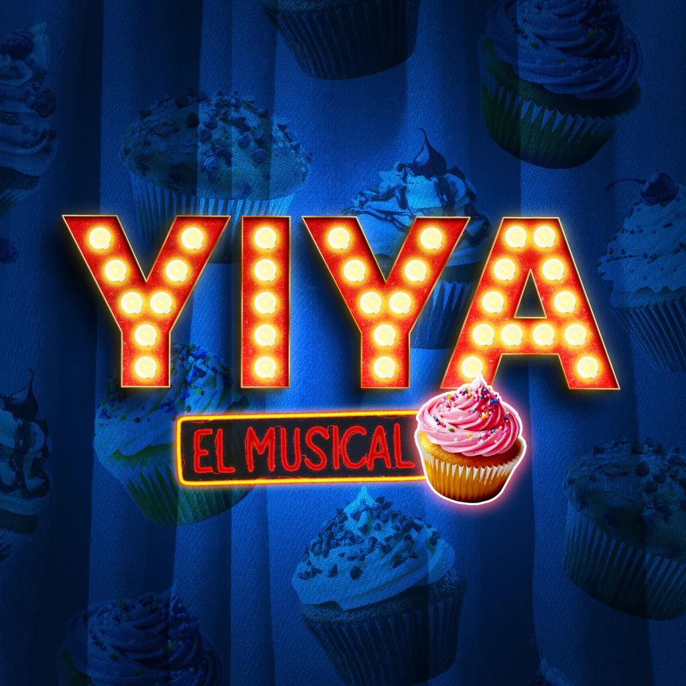

Teatro musicalYiya, el musical
Inspirado en el caso policial de Yiya Murano, este musical combina humor negro, suspenso y canciones originales para construir una propuesta intensa y entretenida. A través de una puesta dinámica y personajes exagerados, la obra reinterpreta una de las historias criminales más conocidas de Argentina desde el lenguaje del teatro musical. Se presenta en Teatro La Brújula y forma parte de la escena de teatro musical independiente de Córdoba.
Ideal para: quienes disfrutan de musicales dinámicos, humor negro y personajes excéntricos.
Funciones: Todos los sábados de mayo a las 21hs.